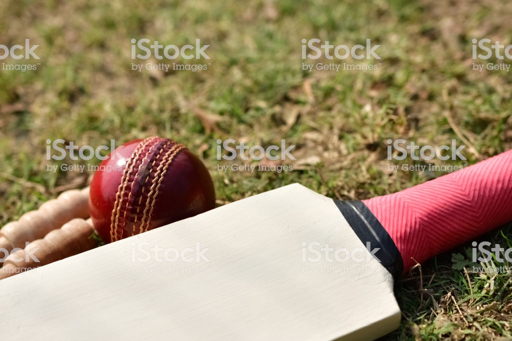

Unfortunately, no one knows exactly who invented cricket. In 1301, Prince Edward played a game of ‘creag’ which some people think was an early
form of cricket. Other people believe the game was invented in the Netherlands during the 13th, 14th or 15th century.
The sport of cricket has a known history beginning in the late 16th century. Having originated in south-east England, it became the country's national sport in the 18th century and has developed globally in the 19th and 20th centuries. International matches have been played since 1844 and Test cricket began, retrospectively recognised, in 1877.
i liked the 1983 world cup where idia was in a losing stage in the final against west indies but Kapil Dev smashed 175* notout and india won the world cup